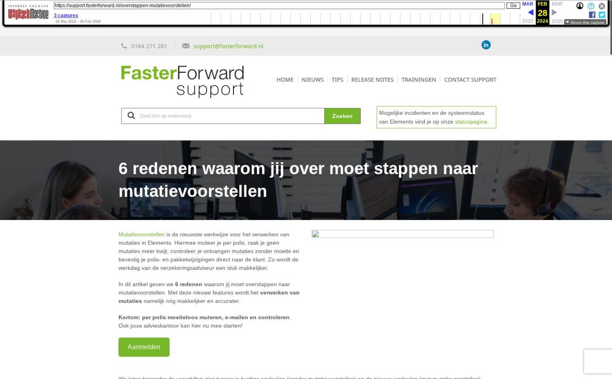

6 redenen waarom jij over moet stappen naar mutatievoorstellen

Tekstinhoud
Mutatievoorstellen is de nieuwste werkwijze voor het verwerken van mutaties in Elements. Hiermee muteer je per polis, raak je geen mutaties meer kwijt, controleer je ontvangen mutaties zonder moeite en bevestig je polis- en pakketwijzigingen direct naar de klant. Zo wordt de werkdag van de verzekeringsadviseur een stuk makkelijker.
In dit artikel geven we 6 redenen waarom jij moet overstappen naar mutatievoorstellen. Met deze nieuwe features wordt het verwerken van mutaties namelijk nóg makkelijker en accurater.
Kortom: per polis moeiteloos muteren, e-mailen en controleren. Ook jouw advieskantoor kan hier nu mee starten!
Aanmelden
We laten hieronder de verschillen zien tussen je huidige werkwijze (zonder mutatievoorstellen) en de nieuwe werkwijze (met mutatievoorstellen).
1. Je raakt geen mutaties meer kwijt
Verzekeringen wijzig je per polis, en niet alleen per pakket.
Met mutatievoorstellen
Alle polismutaties worden altijd vastgelegd en doorgevoerd. Alle verzekeringen in Elements muteren nu namelijk per polis.
Zonder mutatievoorstellen
Je kan polismutaties uit het oog verliezen. Wanneer een verzekeringspakket muteerde, werd er een kopie gemaakt van het gehele pakket. Hierdoor kon het voorkomen dat polismutaties werden overgeschreven, waardoor deze niet meer zichtbaar waren.
2. Muteren gaat veel sneller
In no-time mutaties aangemaakt vanuit het polisoverzicht in het klantdossier.
Met mutatievoorstellen
Je maakt in een paar klikken een mutatie aan in het klantdossier.
Zonder mutatievoorstellen
Je moet handmatig een nieuwe versie aanmaken én in de mutatie aangeven in de workflow.
3. Je bevestigt polismutaties direct naar de klant
E-mails worden klaargezet en volledig gevuld met informatie van de polismutatie.
Met mutatievoorstellen
Klanten informeren is een fluitje van een cent. Zodra je een nieuwe polis aanmaakt of bestaande polis wijzigt, bevestig je dit in een paar klikken direct naar de klant. De workflow zet een e-mail klaar waarin de polisinformatie automatisch is ingeladen.
Zonder mutatievoorstellen
Het kost tijd om de klant te informeren over een poliswijziging. Je kan namelijk alleen e-mail sturen over het volledige pakket, omdat er per polis geen gegevens worden opgehaald en geen workflows beschikbaar zijn.
4. Je controleert eenvoudig mutaties van de verzekeraar
Wij richten vooraf in of je de verzekeraar wilt controleren of niet. Als je dit wel wilt, toont Elements een conflict pop-up met de verschillen tussen jouw mutatie en die van de verzekeraar.
Met mutatievoorstellen
Jouw pakket- en polisinformatie in Elements is nu nog accurater. Mutaties die je via ADN ontvangt van de verzekeraar controleer je namelijk overzichtelijk in Elements. Je controleert bijvoorbeeld de dekkingen, premies, datums en het eigen risico. Zo weet je zeker dat de verzekeraar de mutatie goed heeft doorgevoerd én dat deze correct in Elements staat.
Zonder mutatievoorstellen
Je kan bij ontvangen mutaties niet eenvoudig controleren of deze overeenkwamen met de mutaties die je verwachtte te ontvangen.
5. Je hebt inzicht in geplande mutaties en royementen
Je ziet in het klantdossier per polis wat de toekomstige wijzigingen zijn.
Met mutatievoorstellen
Mutaties worden automatisch verwerkt op de juiste datum en in het bijbehorende klantdossier. Zo heb een realtime overzicht van toekomstige pakket- en poliswijzigingen. Bovendien zijn jouw verzekeringen in Elements altijd up-to-date.
Zonder mutatievoorstellen
Je hebt vrijwel geen inzicht in geplande mutaties en royementen.
6. Je hebt per polis inzicht in afgehandelde mutaties
Je hebt een chronologisch overzicht van handmatige mutaties én mutaties van de verzekeraar.
Met mutatievoorstellen
Toekomstige wijzigingen zijn per polis inzichtelijk, en dus niet alleen per pakket. Hierdoor heb je inzicht in alle e-mails, registraties, brieven en taken over één verzekeringspolis.
Bovendien heb je inzicht in alle afgehandelde wijzigingen. Je ziet welke mutaties handmatig en via ADN zijn aangemaakt, door wie en wanneer.
Zonder mutatievoorstellen
Je kunt verzekeringsinformatie niet per polis bekijken, maar alleen per pakket. Daarnaast heb je geen duidelijk overzicht van alle afgehandelde mutaties.
Starten met deze nieuwe feature?
Vul het onderstaande formulier in en we nemen zo snel mogelijk contact met je op om de nieuwe functionaliteiten in te richten.
Voor- en achternaam
Elements URL (bedrijfsnaam.fasterforwardelements.nl)
Je e-mailadres
Telefoonnummer (optioneel)
Relevante handleidingen
Mutatievoorstel aanmaken
Mutatieconflict verwerken
ADN batch verwerken met mutatievoorstellen
Communicatie aan polis koppelen en inzien
Dekking toevoegen en instellingen wijzigen
Aplaza offerte bericht verwerken
Geplaatst op 14 maart 2023 (Laatste update: 05 april 2023)